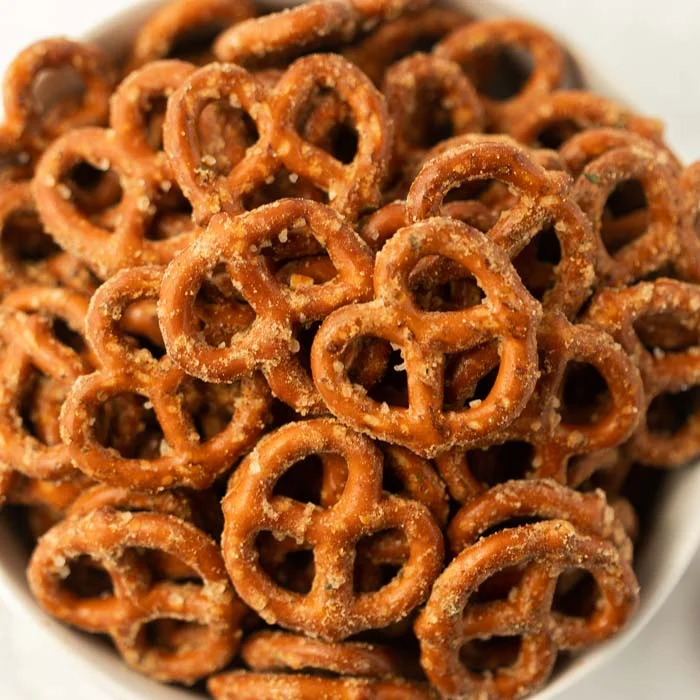

Homemade Ranch Pretzels

Description:
Elevate your average grocery store pretzel snack with this quick delicious recipe.
Ingredients:
- 1/2 cup of oil
- 1 teaspoon of garlic powder
- 1 packet of ranch dressing mix
- 1 pound bag of pretzels
Steps:
- Add the oil, ranch dressing mix, and garlic powder into a large ziploc bag. Make sure the bag is sealed and then shake thorougly to combine ingredients.
- Spread now-seasoned pretzels onto a baking sheet and bake at 270 degrees Fahrenheit for 20 minutes.
- Take out of the oven, allow to cool completely, and enjoy!